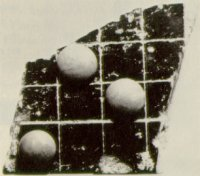
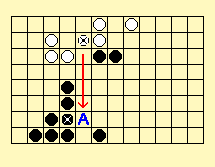
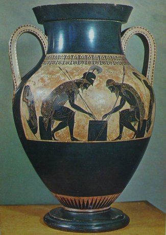

Boards varied in size; some boards were 8 x 8, 8 x 7, or 9 x 10. It may be impossible to determine which of these boards were for what game, but the size of the board may not have affected the style of play. Boards for all these games, therefore, may have been interchangeable. Boards were made of wood, but some were made of stone, marble, or even silver. The image at left shows a fragment of what may be a Petteia board and stones found at Athens. Latrunculi is first mentioned by Varro (116-27 B.C.) but is probably much older, and is last mentioned by Macrobius around 400 A. D., when he rebukes those that "played at Tabula and Latrunculi." Ovid tells us that the pieces were of different colored glass, sometimes precious stones. He also states that a piece is taken by custodial capture (sandwiched between two other pieces) and that "backward moves" were allowed.
Latrunculi is played with two types of pieces, the stones and an extra piece called a King (per Hnefatafl) or a Dux (Duke) per some sources (previously called an Eagle or Aquila here), and it is distinct from Petteia in this regard. Except for the special characteristics of the king it is played by essentially the same rules. Here is a peculiar description of a game that appears to be Latrunculi from the Persian writer Firdawsi (300 AD?), who presumed to describe the origin of chess in the East. This is the description of the King of India answering the King of Persia's challenge to learn this game.
This particular game was supposed to have been played on an 8 x 8 board with 8 men and a king on each side, although this description seems to exaggerate all the proportions and actions. This passage suggests at least two types of players, the king and the ordinary troops, which makes it distinct from Petteia. Note that the two sides were first placed "in order of battle" (lined up in starting position) before he "distributed the troops" (moved into opening positions). This colorful description of what is most definitely Latrunculi is strikingly similar to that given in a poem known as Laus Pisonis which was written by Saleius Bassus during the middle of the Ist century A. D.:
Other clues as to the nature and play of Latrunculi come from the Vikings, who enjoyed a similar game called Hnefatafl. This game is related to a group of games played by the Danes, the Swedes, the Lapps, the British and the Irish. Although the initial arrangements are different, in all other respects this games is played almost the same as Latrunculi. Since the players in this game all have the move of a rook, we can conclude that the same must be true in Latrunculi. Also, the king in Hnefatafl cannot be captured, but can be immobilized, and the sides cannot be used for captures.
One source misinterprets the phrase of Bassus, "pieces are disposed" (or sometimes "pieces are distributed") to mean that the stones were deliberately placed in these opening positions during a preliminary phase of the game. This hypothetical first phase necessitates the invention of an unlikely rule -- that no captures could take place during this phase. In fact, the first quotation, which says "He arranged an army similar to that of chess..." makes it evident that the two sides began on opposite sides of the board before they "distributed the troops." The contention that a separate opening phase existed in Latrunculi is an unnecessary artifice that seems to have been inspired by a modern version of the Egyptian game Seega, although there seems to be no evidence that the ancient version of Seega was played in this way. If Chess were played this way, by alternately placing pieces on the board during an opening phase while disallowing captures, it would be seen by players as an useless contrivance. Furthermore, any realistic position that could be created by alternately placing pieces on the board could also be achieved by moving pieces into place from the starting position, making such a postulated "opening phase" as redundant as it is pointless. In any event, the Stanway game below proves beyond doubt that there was no opening phase without captures in Latrunculi.
Varro makes reference to Latrunculi in the following passage:
A layout of the gameboard is shown below, based on the game found at Stanway in Essex, England. The kings are located symmetrically opposite one another, like the kings in modern chess. Each king is placed right of center in front of twelve latro on a 12 x 8 board. Furthermore, the king cannot be captured, but can only be penned up. In all other respects, this game is played by the same rules as Petteia. Two men may capture an enemy player by enclosing him on two sides, horizontal or vertical. When the king is immobilized, the game is over, regardless of how many stones are left on the board.
Another rule has been suggested in which the stones in contact with the king form a mandra and cannot be captured along the same line as the king. This is not a rule but a direct consequence of the fact that if a king is present in a line of stones a multiple stone capture by the opponent is impossible along that line. Proposed Rule 7 above has been adopted based on the similar game Shogi, as discussed previously, but has no major impact on the game. Rule 11 is based on the anecdote at the end of this webpage where a player was ahead by one point -- the score wouldn't be kept if it didn't mean something.
Proposed Rule 10 above represents a literal interpretation of the term "immobilization" and is also based on the mode of play in the derivative game of Hnefatafl. Rule 10 allows a single white stone to capture an enemy king by blocking it against its own stones and/or the sides,  as shown in the figure at right where a white move to 'A' immobilizes the king and wins the game. This rule changes the focus of the game from capturing enemy stones, as in Petteia, to cornering the king with clever forcing moves, and can furthermore make for sudden victory, even by an outnumbered force. Without Rule 10 it is difficult for either player to make progress unless someone makes a mistake, and the game often becomes a drawn-out standoff like Petteia. Readers are encouraged to try the game with and without this rule to see for themselves that it not only makes the most sense but also produces the most engaging and delightful version of the game possible.
Given the above proposed rules, there seems to be room and opportunity for strategic openings that would give players the ability to carry on a fighting struggle, but what the opening strategies are that work best remain to be rediscovered. Likely, the Romans knew various strategic openings as Chess players do today. The rook-like moves allow each stone to 'cover' lanes on the board (or create points that it would be death to occupy), and it is likely that players would try to initially maximize coverage before embarking on attack strategies. The Stanway opening strongly suggests the players were positioning their stones in an opening formation that would give each control over different areas of the board. Also, the descriptions of the game suggest that placing a roving player behind enemy lines is a probable necessity since the board can easily be blocked off by the enemy. Perhaps the best piece to send behind enemy lines is the king, since it cannot be captured. The photos below shows the author's Latrunculi board with pyramidal shaped kings in the starting arrangement on a 12x8 board.
In one of his epigrams called Calculi, Martial describes the play in Latrunculi:
Which translates as:
| The large Greek amphora at right shows the legendary game of Petteia played between Achilles and Ajax at Troy. This amphora was painted by Exekias, the greatest artist of his generation and a pupil of Klitias, in 530 BC. It has been suggested that this recurring theme represents a famous lost epic poem in which the two heroes, Achilles and Ajax, became so absorbed in the game that, although in full armour, they forgot about the ongoing battle. This amphora came from Vulci and is in the Museo Gregoriano Etrusco, Vatican City. |  |
In the following epigram by Martial called Tabula Lusoria, he makes reference to a Tabula board that had a Latrunculi board on the opposite side, speaking from the point of view of the board itself:
Which translates as:
In another epigram Martial says to his friend Paulus:
During the reign of Caligula, the mad emperor sentenced a noble Roman named Camus to death over a disagreement. When the centurion charged with the execution came to arrest Camus, he found him relaxing over a game of Latrunculi with friends. Camus took pause to count up the score and said, "See that after my death you don't claim victory." He then asked the centurion to verify that he was indeed ahead ahead by one point. Camus went calmly to his execution remarking that although others wondered endlessly if the soul was immortal, he would shortly find out. (from Seneca, On Tranquility of Mind).